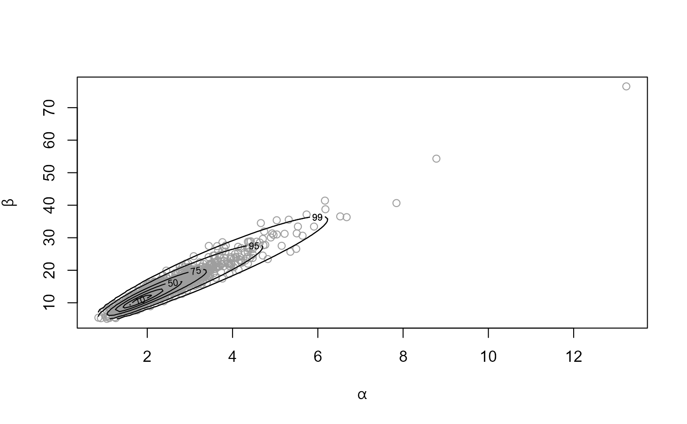
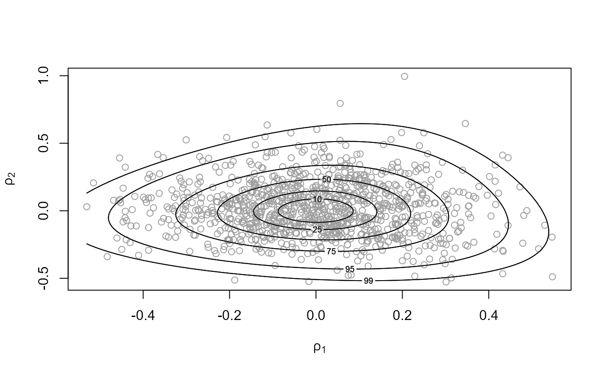
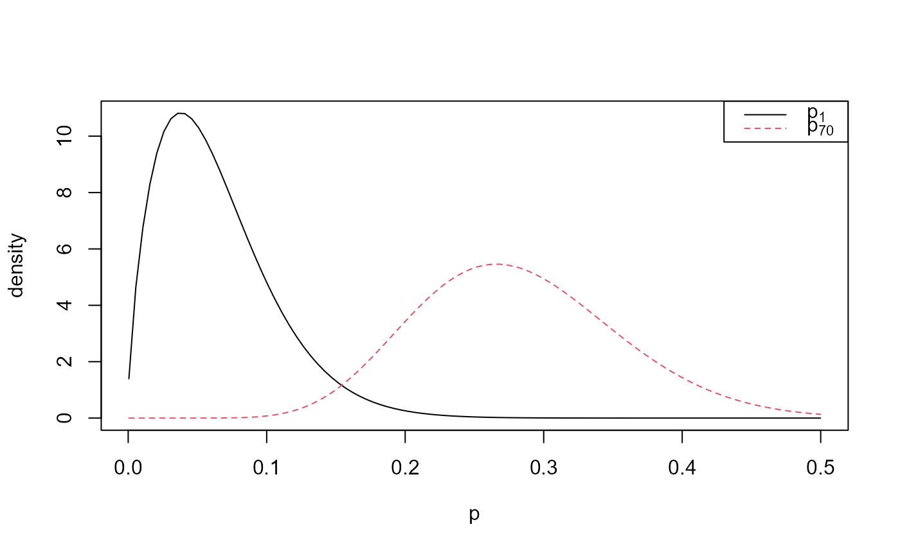
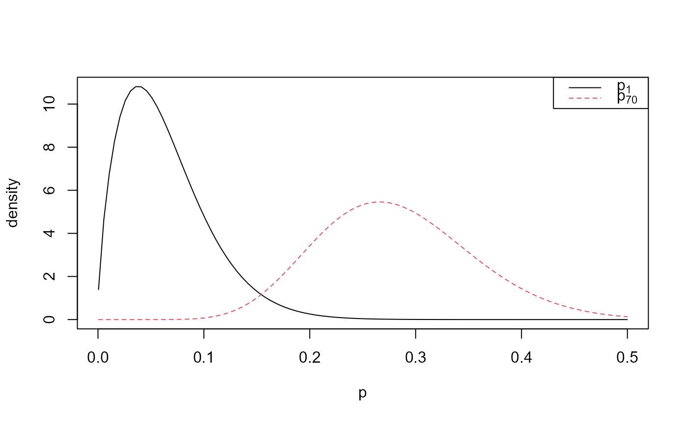
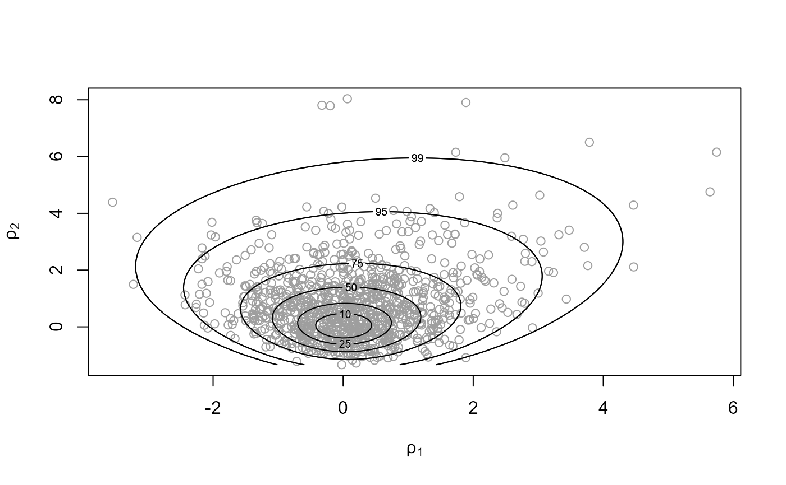
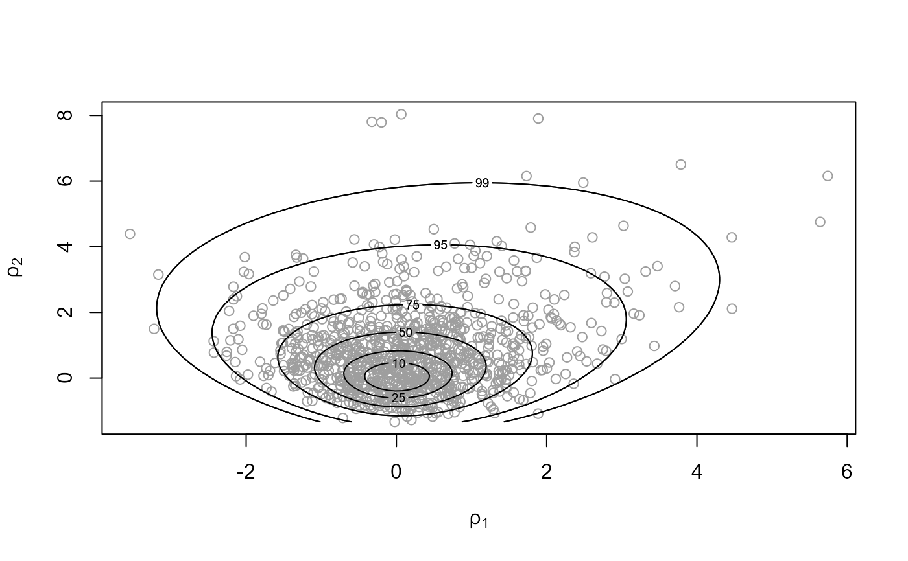
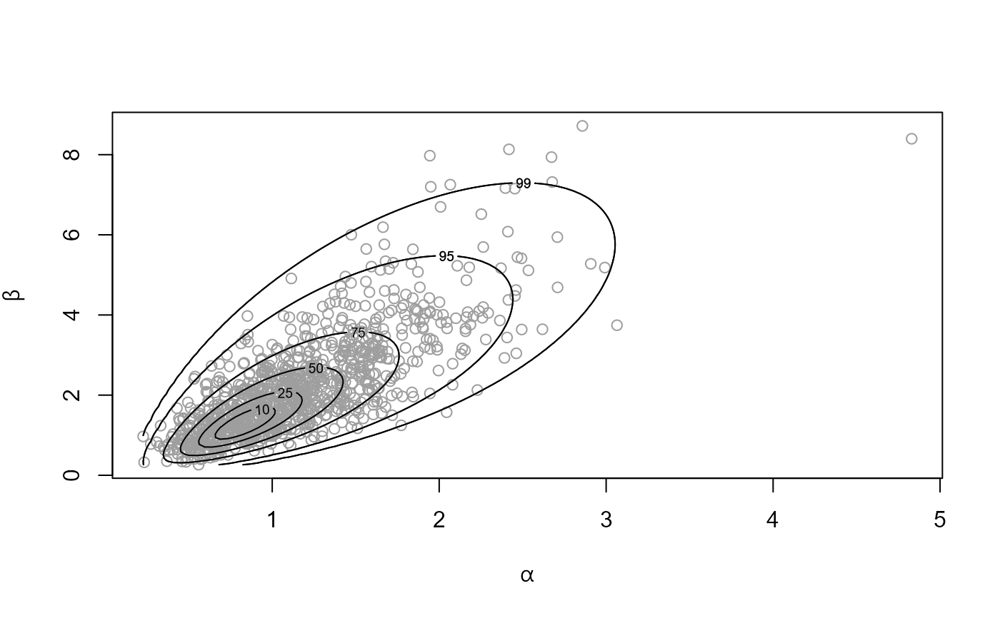
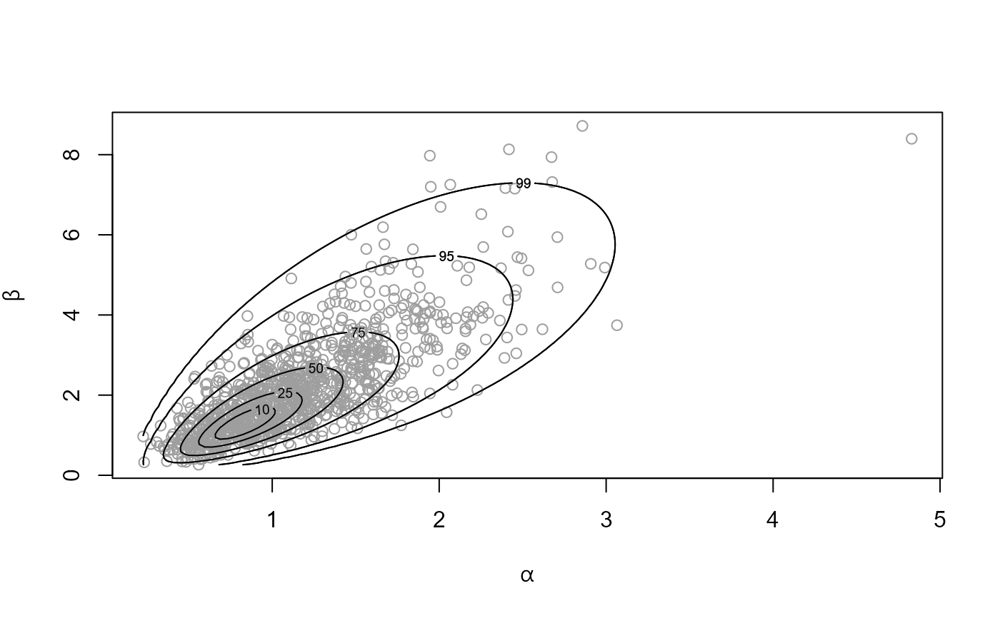

Produces random samples from the posterior distribution of the parameters of certain hierarchical exponential family models.
Arguments
- n
An integer scalar. The size of the posterior sample required.
- model
A character string. Abbreviated name for the response-population distribution combination. For a hierarchical normal model see
hanova1(hierarchical one-way analysis of variance (ANOVA)).- data
A numeric matrix. The format depends on
model. See Details.- ...
Optional further arguments to be passed to
ru.- prior
The log-prior for the parameters of the hyperprior distribution. If the user wishes to specify their own prior then
priormust be an object returned from a call toset_user_prior. Otherwise,prioris a character scalar giving the name of the required in-built prior. Ifprioris not supplied then a default prior is used. See Details.- hpars
A numeric vector. Used to set parameters (if any) in an in-built prior.
- param
A character scalar. If
param = "trans"(the default) then the marginal posterior of hyperparameter vector \(\phi\) is reparameterized in a way designed to improve the efficiency of sampling from this posterior. Ifparam = "original"the original parameterization is used. The former tends to make the optimizations involved in the ratio-of-uniforms algorithm more stable and to increase the probability of acceptance, but at the expense of slower function evaluations.- init
A numeric vector of length 2. Optional initial estimates for the search for the mode of the posterior density of the hyperparameter vector \(\phi\).
- nrep
A numeric scalar. If
nrepis notNULLthennrepgives the number of replications of the original dataset simulated from the posterior predictive distribution. Each replication is based on one of the samples from the posterior distribution. Therefore,nrepmust not be greater thann. In that eventnrepis set equal ton.
Value
An object (list) of class "hef", which has the same
structure as an object of class "ru" returned from ru.
In particular, the columns of the n-row matrix sim_vals contain the simulated values of \(\phi\).
In addition this list contains the arguments model, data and prior detailed above, an n by \(J\) matrix
theta_sim_vals: column \(j\) contains the simulated values of
\(\theta\)\(j\) and call: the matched call to hef.
If nrep is not NULL then this list also contains
data_rep, a numerical matrix with nrep columns.
Each column contains a replication of the first column of the original
data data[, 1], simulated from the posterior predictive
distribution.
Details
Conditional on population-specific parameter vectors
\(\theta\)1, ..., \(\theta\)\(J\)
the observed response data \(y\)1, ..., \(y\)J within each
population are modelled as random samples from a distribution in an
exponential family. The population parameters \(\theta\)1, ...,
\(\theta\)\(J\) are modelled as random samples from a common
population distribution, chosen to be conditionally conjugate
to the response distribution, with hyperparameter vector
\(\phi\). Conditionally on
\(\theta\)1, ..., \(\theta\)\(J\), \(y\)1, ..., \(y\)\(J\)
are independent of each other and are independent of \(\phi\).
A hyperprior is placed on \(\phi\). The user can either
choose parameter values of a default hyperprior or specify their own
hyperprior using set_user_prior.
The ru function in the rust
package is used to draw a random sample
from the marginal posterior of the hyperparameter vector \(\phi\).
Then, conditional on these values, population parameters are sampled
directly from the conditional posterior density of
\(\theta\)1, ..., \(\theta\)\(J\) given \(\phi\) and the data.
We outline each model, specify the format of the
data, give the default (log-)priors (up to an additive constant)
and detail the choices of ratio-of-uniforms parameterization
param.
Beta-binomial: For \(j = 1, ..., J\),
\(Yj | pj\) are i.i.d binomial\((nj, pj)\),
where \(pj\) is the probability of success in group \(j\)
and \(nj\) is the number of trials in group \(j\).
\(pj\) are i.i.d. beta\((\alpha, \beta)\), so
and \(\phi = (\alpha, \beta)\).
data is a 2-column matrix: the numbers of successes in column 1
and the corresponding numbers of trials in column 2.
Priors:
prior = "bda" (the default):
\(log \pi(\alpha, \beta) = - 2.5 log(\alpha + \beta),
\alpha > 0, \beta > 0.\) [See Section 5.3 of Gelman et al. (2014).]
prior = "gamma": independent gamma priors on \(\alpha\)
and \(\beta\), i.e.
\(log \pi(\alpha, \beta) =
(s1 - 1)log\alpha - r1 \alpha +
(s2 - 1)log\beta - r2 \beta, \alpha > 0, \beta > 0.\)
where the respective shape (\(s1\), \(s2\)) and rate
(\(r1\), \(r2\)) parameters are specified using
hpars = \((s1, r1, s2, r2)\). The default setting is
hpars = c(1, 0.01, 1, 0.01).
Parameterizations for sampling:
param = "original" is (\(\alpha, \beta\)),
param = "trans" (the default) is
\(\phi1 = logit(\alpha/(\alpha+\beta)) = log(\alpha/\beta),
\phi2 = log(\alpha+\beta)\).
See Section 5.3 of Gelman et al. (2014).
Gamma-Poisson: For \(j = 1, ..., J\),
\(Yj | \lambda\)j are i.i.d Poisson(\(e\)j\(\lambda\)j),
where
\(ej\) is the exposure in group \(j\), based on the
total length of observation time and/or size of the population at
risk of the event of interest and \(\lambda\)j is the mean number
of events per unit of exposure.
\(\lambda\)j are i.i.d. gamma\((\alpha, \beta)\), so
\(\phi = (\alpha, \beta)\).
data is a 2-column matrix: the counts \(yj\) of the numbers of
events in column 1 and the corresponding exposures \(ej\) in column 2.
Priors:
prior = "gamma" (the default): independent gamma priors
on \(\alpha\) and \(\beta\), i.e.
\(log \pi(\alpha, \beta) =
(s1 - 1)log\alpha - r1 \alpha +
(s2 - 1)log\beta - r2 \beta, \alpha > 0, \beta > 0.\)
where the respective shape (\(s1\), \(s2\)) and rate
(\(r1\), \(r2\)) parameters are specified using
hpars = \((s1, r1, s2, r2)\). The default setting is
hpars = c(1, 0.01, 1, 0.01).
Parameterizations for sampling:
param = "original" is (\(\alpha, \beta\)),
param = "trans" (the default) is
\(\phi1 = log(\alpha/\beta), \phi2 = log(\beta).\)
References
Gelman, A., Carlin, J. B., Stern, H. S. Dunson, D. B., Vehtari, A. and Rubin, D. B. (2014) Bayesian Data Analysis. Chapman & Hall / CRC. http://www.stat.columbia.edu/~gelman/book
See also
The ru function in the rust
package for details of the arguments that can be passed to ru via
hef.
hanova1 for hierarchical one-way analysis of
variance (ANOVA).
set_user_prior to set a user-defined prior.
Examples
############################ Beta-binomial #################################
# ------------------------- Rat tumor data ------------------------------- #
# Default prior, sampling on (rotated) (log(mean), log(alpha + beta)) scale
rat_res <- hef(model = "beta_binom", data = rat)
# \donttest{
# Hyperparameters alpha and beta
plot(rat_res)

# Parameterization used for sampling
plot(rat_res, ru_scale = TRUE)

# }
summary(rat_res)
#> ru bounding box:
#> box vals1 vals2 conv
#> a 1.0000000 0.00000000 0.00000000 0
#> b1minus -0.2382163 -0.40313465 -0.03906170 0
#> b2minus -0.2174510 0.05447431 -0.35297539 0
#> b1plus 0.2231876 0.36718411 -0.06551353 0
#> b2plus 0.2512577 0.05665707 0.44459818 0
#>
#> estimated probability of acceptance:
#> [1] 0.5083884
#>
#> sample summary
#> alpha beta
#> Min. : 0.9621 Min. : 5.185
#> 1st Qu.: 1.7954 1st Qu.: 10.713
#> Median : 2.2742 Median : 13.281
#> Mean : 2.5082 Mean : 14.928
#> 3rd Qu.: 2.8243 3rd Qu.: 16.891
#> Max. :83.4309 Max. :474.125
# Choose rats with extreme sample probabilities
pops <- c(which.min(rat[, 1] / rat[, 2]), which.max(rat[, 1] / rat[, 2]))
# Population-specific posterior samples: separate plots
plot(rat_res, params = "pop", plot_type = "both", which_pop = pops)
 # Population-specific posterior samples: one plot
plot(rat_res, params = "pop", plot_type = "dens", which_pop = pops,
one_plot = TRUE, add_legend = TRUE)

# Default prior, sampling on (rotated) (alpha, beta) scale
rat_res <- hef(model = "beta_binom", data = rat, param = "original")
# \donttest{
plot(rat_res)
# Population-specific posterior samples: one plot
plot(rat_res, params = "pop", plot_type = "dens", which_pop = pops,
one_plot = TRUE, add_legend = TRUE)

# Default prior, sampling on (rotated) (alpha, beta) scale
rat_res <- hef(model = "beta_binom", data = rat, param = "original")
# \donttest{
plot(rat_res)
 plot(rat_res, ru_scale = TRUE)

# }
summary(rat_res)
#> ru bounding box:
#> box vals1 vals2 conv
#> a 1.0000000 0.00000000 0.0000000 0
#> b1minus -1.0464012 -1.85116847 0.8473716 0
#> b2minus -0.7515215 0.06414713 -1.0929862 0
#> b1plus 1.2453108 2.53614928 1.3267447 0
#> b2plus 1.6246189 0.52814754 3.8051940 0
#>
#> estimated probability of acceptance:
#> [1] 0.5083884
#>
#> sample summary
#> alpha beta
#> Min. : 0.9446 Min. : 4.957
#> 1st Qu.: 1.7791 1st Qu.:10.698
#> Median : 2.2275 Median :13.151
#> Mean : 2.4029 Mean :14.280
#> 3rd Qu.: 2.7970 3rd Qu.:17.027
#> Max. :10.8674 Max. :58.777
# To produce a plot akin to Figure 5.3 of Gelman et al. (2014) we
# (a) Use the same prior for (alpha, beta)
# (b) Don't use axis rotation (rotate = FALSE)
# (c) Plot on the scale used for ratio-of-uniforms sampling (ru_scale = TRUE)
# (d) Note that the mode is relocated to (0, 0) in the plot
rat_res <- hef(model = "beta_binom", data = rat, rotate = FALSE)
# \donttest{
plot(rat_res, ru_scale = TRUE)
plot(rat_res, ru_scale = TRUE)

# }
summary(rat_res)
#> ru bounding box:
#> box vals1 vals2 conv
#> a 1.0000000 0.00000000 0.0000000 0
#> b1minus -1.0464012 -1.85116847 0.8473716 0
#> b2minus -0.7515215 0.06414713 -1.0929862 0
#> b1plus 1.2453108 2.53614928 1.3267447 0
#> b2plus 1.6246189 0.52814754 3.8051940 0
#>
#> estimated probability of acceptance:
#> [1] 0.5083884
#>
#> sample summary
#> alpha beta
#> Min. : 0.9446 Min. : 4.957
#> 1st Qu.: 1.7791 1st Qu.:10.698
#> Median : 2.2275 Median :13.151
#> Mean : 2.4029 Mean :14.280
#> 3rd Qu.: 2.7970 3rd Qu.:17.027
#> Max. :10.8674 Max. :58.777
# To produce a plot akin to Figure 5.3 of Gelman et al. (2014) we
# (a) Use the same prior for (alpha, beta)
# (b) Don't use axis rotation (rotate = FALSE)
# (c) Plot on the scale used for ratio-of-uniforms sampling (ru_scale = TRUE)
# (d) Note that the mode is relocated to (0, 0) in the plot
rat_res <- hef(model = "beta_binom", data = rat, rotate = FALSE)
# \donttest{
plot(rat_res, ru_scale = TRUE)
 # }
# This is the estimated location of the posterior mode
rat_res$f_mode
#> [1] -1.785783 2.741549
# User-defined prior, passing parameters
# (equivalent to prior = "gamma" with hpars = c(1, 0.01, 1, 0.01))
user_prior <- function(x, hpars) {
return(dexp(x[1], hpars[1], log = TRUE) + dexp(x[2], hpars[2], log = TRUE))
}
user_prior_fn <- set_user_prior(user_prior, hpars = c(0.01, 0.01))
rat_res <- hef(model = "beta_binom", data = rat, prior = user_prior_fn)
# \donttest{
plot(rat_res)
# }
# This is the estimated location of the posterior mode
rat_res$f_mode
#> [1] -1.785783 2.741549
# User-defined prior, passing parameters
# (equivalent to prior = "gamma" with hpars = c(1, 0.01, 1, 0.01))
user_prior <- function(x, hpars) {
return(dexp(x[1], hpars[1], log = TRUE) + dexp(x[2], hpars[2], log = TRUE))
}
user_prior_fn <- set_user_prior(user_prior, hpars = c(0.01, 0.01))
rat_res <- hef(model = "beta_binom", data = rat, prior = user_prior_fn)
# \donttest{
plot(rat_res)
 # }
summary(rat_res)
#> ru bounding box:
#> box vals1 vals2 conv
#> a 1.0000000 0.00000000 0.00000000 0
#> b1minus -0.2425978 -0.41087097 -0.04439263 0
#> b2minus -0.2145118 0.05190271 -0.34376799 0
#> b1plus 0.2280150 0.37607515 -0.07085000 0
#> b2plus 0.2730012 0.06004980 0.51162996 0
#>
#> estimated probability of acceptance:
#> [1] 0.5141388
#>
#> sample summary
#> alpha beta
#> Min. : 1.077 Min. : 6.103
#> 1st Qu.: 2.276 1st Qu.: 13.943
#> Median : 2.972 Median : 17.984
#> Mean : 3.302 Mean : 19.867
#> 3rd Qu.: 3.897 3rd Qu.: 23.456
#> Max. :18.579 Max. :106.048
############################ Gamma-Poisson #################################
# ------------------------ Pump failure data ------------------------------ #
pump_res <- hef(model = "gamma_pois", data = pump)
# Hyperparameters alpha and beta
# \donttest{
plot(pump_res)

# }
# Parameterization used for sampling
plot(pump_res, ru_scale = TRUE)
# }
summary(rat_res)
#> ru bounding box:
#> box vals1 vals2 conv
#> a 1.0000000 0.00000000 0.00000000 0
#> b1minus -0.2425978 -0.41087097 -0.04439263 0
#> b2minus -0.2145118 0.05190271 -0.34376799 0
#> b1plus 0.2280150 0.37607515 -0.07085000 0
#> b2plus 0.2730012 0.06004980 0.51162996 0
#>
#> estimated probability of acceptance:
#> [1] 0.5141388
#>
#> sample summary
#> alpha beta
#> Min. : 1.077 Min. : 6.103
#> 1st Qu.: 2.276 1st Qu.: 13.943
#> Median : 2.972 Median : 17.984
#> Mean : 3.302 Mean : 19.867
#> 3rd Qu.: 3.897 3rd Qu.: 23.456
#> Max. :18.579 Max. :106.048
############################ Gamma-Poisson #################################
# ------------------------ Pump failure data ------------------------------ #
pump_res <- hef(model = "gamma_pois", data = pump)
# Hyperparameters alpha and beta
# \donttest{
plot(pump_res)

# }
# Parameterization used for sampling
plot(pump_res, ru_scale = TRUE)
 summary(pump_res)
#> ru bounding box:
#> box vals1 vals2 conv
#> a 1.0000000 0.00000000 0.00000000 0
#> b1minus -0.5174980 -0.91869101 -0.06060116 0
#> b2minus -0.5150835 0.15757254 -0.92429417 0
#> b1plus 0.4124640 0.65433383 -0.11046433 0
#> b2plus 0.4224941 0.08788857 0.67847965 0
#>
#> estimated probability of acceptance:
#> [1] 0.5367687
#>
#> sample summary
#> alpha beta
#> Min. :0.2889 Min. :0.2452
#> 1st Qu.:0.7973 1st Qu.:1.2731
#> Median :1.0759 Median :1.8298
#> Mean :1.1437 Mean :2.1012
#> 3rd Qu.:1.4005 3rd Qu.:2.6880
#> Max. :3.2284 Max. :7.7540
# Choose pumps with extreme sample rates
pops <- c(which.min(pump[, 1] / pump[, 2]), which.max(pump[, 1] / pump[, 2]))
plot(pump_res, params = "pop", plot_type = "dens", which_pop = pops)
summary(pump_res)
#> ru bounding box:
#> box vals1 vals2 conv
#> a 1.0000000 0.00000000 0.00000000 0
#> b1minus -0.5174980 -0.91869101 -0.06060116 0
#> b2minus -0.5150835 0.15757254 -0.92429417 0
#> b1plus 0.4124640 0.65433383 -0.11046433 0
#> b2plus 0.4224941 0.08788857 0.67847965 0
#>
#> estimated probability of acceptance:
#> [1] 0.5367687
#>
#> sample summary
#> alpha beta
#> Min. :0.2889 Min. :0.2452
#> 1st Qu.:0.7973 1st Qu.:1.2731
#> Median :1.0759 Median :1.8298
#> Mean :1.1437 Mean :2.1012
#> 3rd Qu.:1.4005 3rd Qu.:2.6880
#> Max. :3.2284 Max. :7.7540
# Choose pumps with extreme sample rates
pops <- c(which.min(pump[, 1] / pump[, 2]), which.max(pump[, 1] / pump[, 2]))
plot(pump_res, params = "pop", plot_type = "dens", which_pop = pops)